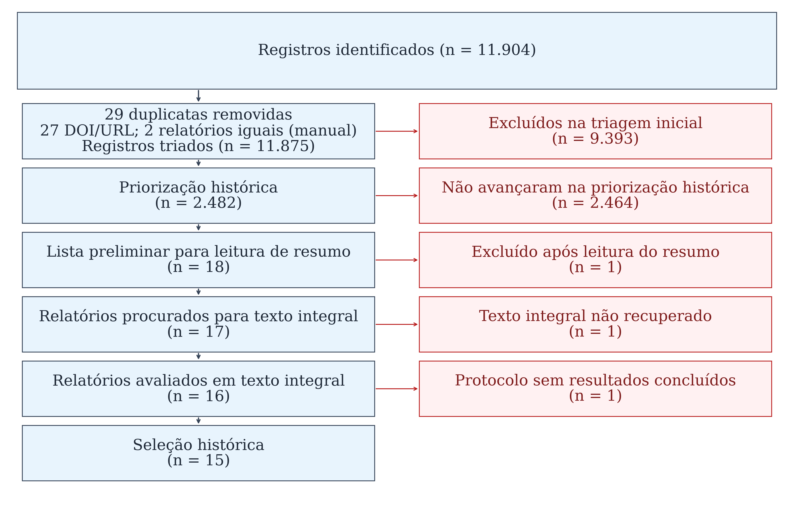
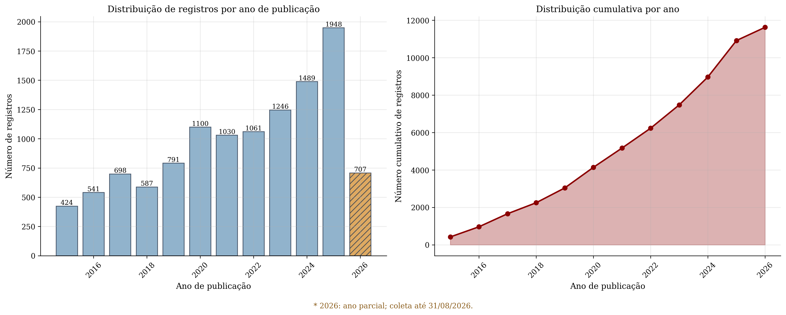
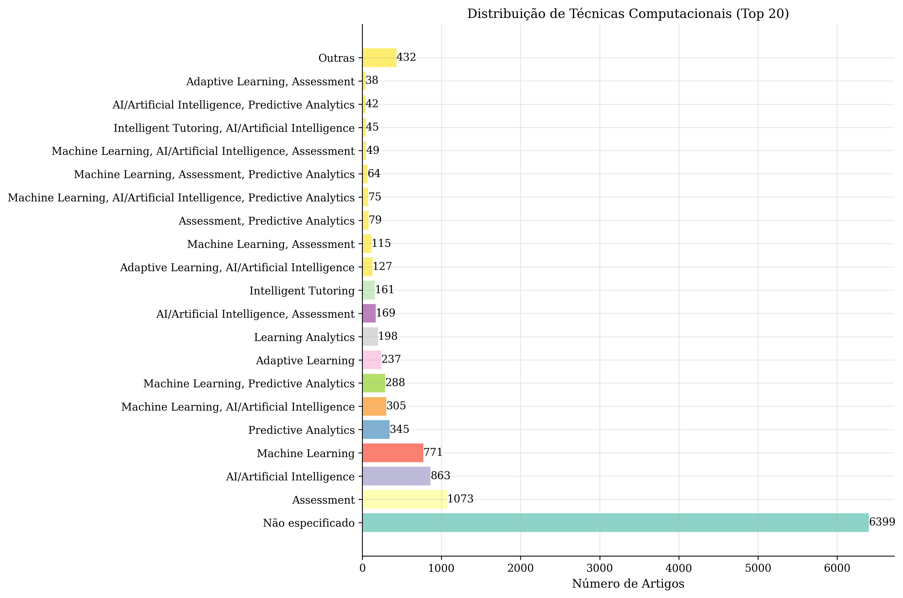
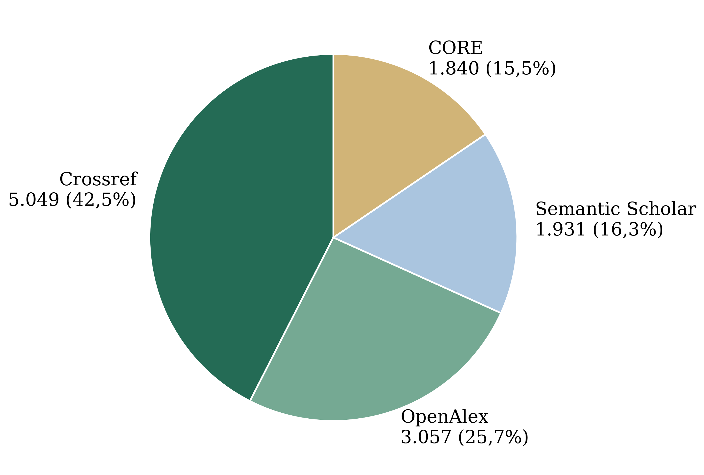
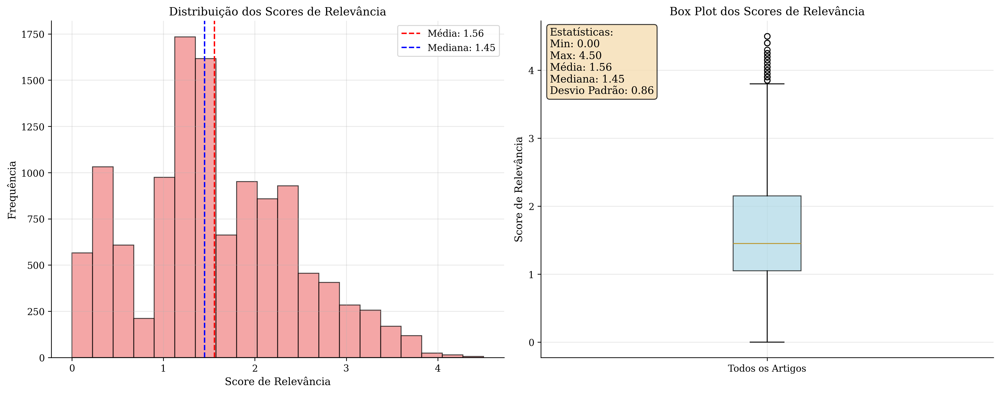
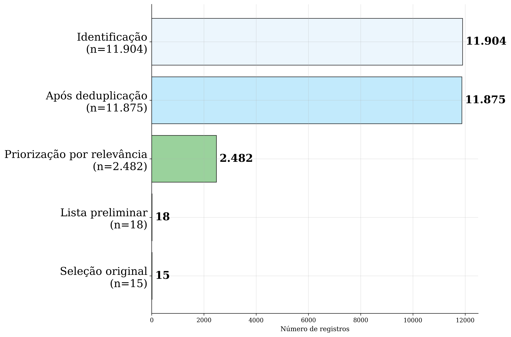

Resumo operacional da revisão sistemática
Ensino Personalizado de Matemática: revisão sistemática de técnicas computacionais e especificação de um protótipo de apoio à interpretação docente
Snapshot do export operacional: 14/11/2026 11:57
Estatísticas do export
Registros identificados
11904
Identificados
11904
Registros retidos
15
Score médio operacional
1.56
Sobre os registros após a remoção determinística; não é qualidade metodológica.
Percentuais das etapas operacionais
| Relação | Percentual |
|---|---|
| Excluídos na triagem inicial / registros após deduplicação | 79.1% |
| Submetidos à priorização histórica / registros após deduplicação | 20.9% |
| Não avançaram na priorização histórica / registros priorizados | 99.27% |
| Excluídos após resumo / shortlist | 5.56% |
| Relatórios não recuperados / relatórios buscados | 11.76% |
| Excluídos após texto integral / textos avaliados | 6.67% |
| Relatórios empíricos recuperados / textos avaliados | 93.33% |
| Incluídos / identificação | 0.13% |
A seleção por corte 4,0 permanece histórica e inalterada. A priorização por metadados e resumos não equivale à elegibilidade em texto completo. O fluxo de recuperação atual registra 2 relatório(s) não recuperado(s), 15 avaliado(s) e 14 relatório(s) empírico(s) recuperado(s). Sokkhey permanece apenas como inclusão histórica sem cópia verificável; relatórios não recuperados não são exclusões após leitura integral.
Auditoria de identidade bibliográfica
DOI/URL exatos são deduplicados como identidade de registro no fluxo PRISMA. A linha de título bruto inclui sobreposição com essas identidades; a linha de título-only mostra os candidatos restantes depois da remoção determinística. Nenhum título é removido automaticamente por igualdade textual.
| Indicador | Grupos | Linhas repetidas | Excedentes |
|---|---|---|---|
| DOI normalizado | 25 | 50 | 25 |
| URL exata | 2 | 4 | 2 |
| Título normalizado | 177 | 434 | 257 |
| Título-only após DOI/URL | 154 | 386 | 232 |
Registros removidos por identidade DOI/URL: 27. Relatórios repetidos confirmados em revisão manual: 2. Flags persistidas no snapshot: 0. Duplicatas semanticamente confirmadas por título: 0.
Visualizações
Fluxo operacional de seleção

Registros por ano de publicação

Rótulos de técnicas no export

Registros por base de dados

Distribuição dos escores operacionais

Funil de registros do export operacional

Registros do estágio operacional (15)
Esta lista representa os registros com etapa operacional included no export. A população inclui candidatos empíricos provisórios e um protocolo contextual; consulte a seleção histórica e o registro MMAT para a interpretação científica.
Lista limitada aos 50 primeiros. Consulte o relatório de registros retidos para a lista completa.
💻 Técnicas Computacionais no snapshot
Frequências calculadas sobre os registros após a remoção determinística (n=11875); as categorias podem se sobrepor e não representam apenas os registros retidos nem qualidade ou eficácia.
| Técnica | Frequência |
|---|---|
| Não Especificado | 6399 |
| Assessment | 1073 |
| Ai/Artificial Intelligence | 863 |
| Machine Learning | 771 |
| Predictive Analytics | 345 |
| Machine Learning, Ai/Artificial Intelligence | 305 |
| Machine Learning, Predictive Analytics | 288 |
| Adaptive Learning | 237 |
| Learning Analytics | 198 |
| Ai/Artificial Intelligence, Assessment | 169 |
Informações do processo
Snapshot do export: 14/11/2026 11:57
Relato: PRISMA 2020 foi usado como diretriz; consulte o checklist para itens e desvios documentados.
Filtro operacional: escore de relevância multicritério sobre metadados e resumos; não equivale à avaliação de elegibilidade de relatórios em texto completo nem substitui a adjudicação científica da população retida.